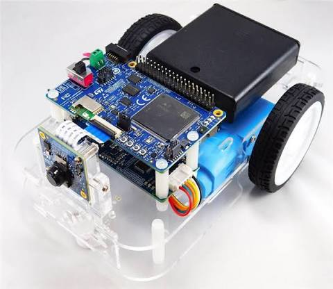

Trajektorien
Schätzfehler
Verläufe
Trajektorien
Modus
Tastatur & Gamepad (nicht verbunden)
Leertaste = Stopp. Fernsteuerung mit Pfeiltasten oder W/A/S/D, durch Ziehen auf dem Roboterbild (nach oben = vorwärts, zur Seite = lenken) oder mit dem Gamepad.
Gamepad (PS4): Koppeln per USB oder Bluetooth, dann eine Taste drücken. Linker Stick ↕ Geschwindigkeit · rechter Stick ↔ Lenkung · R2 = schneller · ✕ Stopp · ○ Fernsteuerung · □ Autopilot · △ Wegpunkte · Options = Pause/Weiter · L1 = Aufnahme · R1 = Linienfolge
Wegpunkte
Koordinaten im Odometrie-System: Start = (0, 0), x nach vorn, y nach links. Erreichte Punkte werden grau.

Beschreibung
- Aktorik: 2 Getriebemotoren mit Encodern (Differentialantrieb, Spurweite 11,5 cm), LEDs rot/grün/gelb
- Sensorik: ToF-Abstandssensor VL53L8CX (8×8 Zonen, 45°), IMU LSM6DSV16BX (Gyroskop, Beschleunigung), Magnetometer LIS2MDL, Kamera VD56G3, Mikrofon, Akkuspannung, Taster SW3–SW5
- Steuerung: Mainboard STEVAL-ROBKIT1-1 mit STM32H725 (Simulink-Firmware, Takt 20 ms) und Bluetooth LE (BlueNRG-2); Motorboard STEVAL-ROBKIT1-2 mit STM32G071 (Drehzahlregelung, Odometrie)
Zoomen und Verschieben wirken in beiden Karten gleich. Antippen setzt Wegpunkte (Schalter „Antippen setzt Wegpunkt“), in beiden Karten.
Radgeschwindigkeit [cm/s]
Position [cm]
Kurs θ [°] (+ = rechts): Pose, Encoder, Kompass
Abstand vorne [mm]
Letzte 30 s. „Ist“ wird aus der Encoder-Odometrie des Motorboards berechnet (Spurweite 11,5 cm).
Parameter (RK)
| Name | Roboter | Neuer Wert | |
|---|---|---|---|
| Nach dem Verbinden werden die Parameter gelesen. | |||
Änderungen wirken sofort, gehen aber beim Neustart verloren. Dauerhaft: Werte in matlab/robkit_params.m übernehmen („Als MATLAB kopieren“). NavVariant: 1 = Standard, 2 = Random Turn.
Aufzeichnung
Start/Stopp auch über „● Aufnahme“ oben rechts (in jedem Unterreiter) oder L1 am Gamepad. CSV z. B. in MATLAB: T = readtable('robkit_log.csv');, Spalten siehe webapp/PROTOCOL.md im ROBKIT1-Projekt.